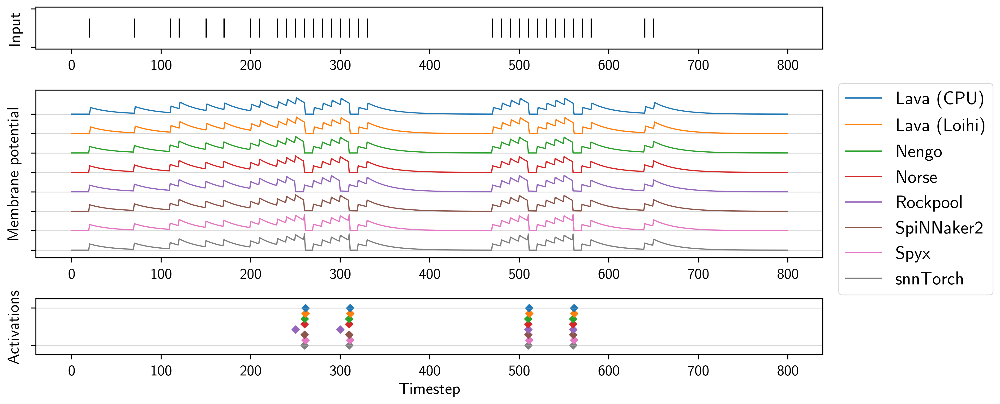
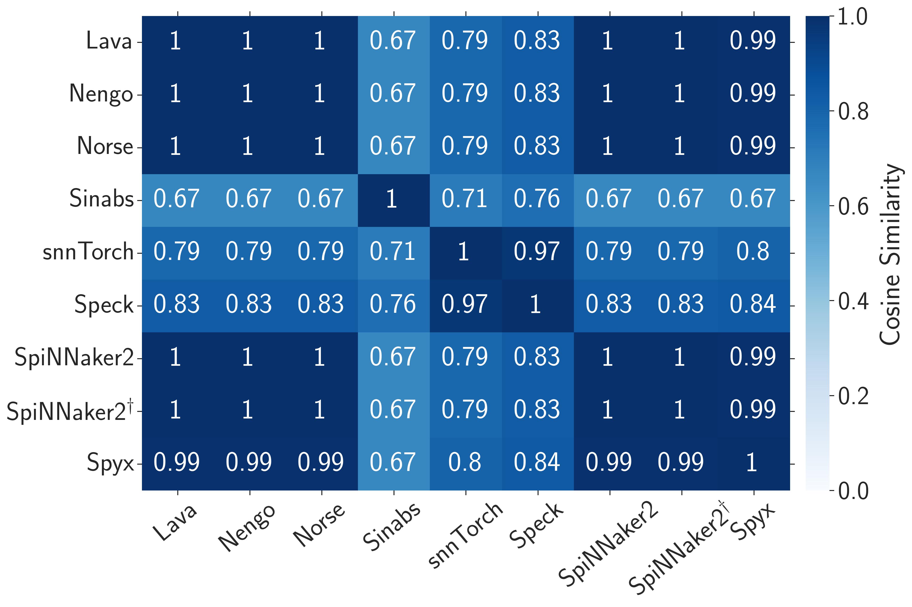

From digital to neural
Building with first principles
Jens Egholm Pedersen
KTH Royal Institute of Technology, Innatera
jeped@kth.se jegp@mastodon.social github.com/neuromorphs/nir
Agenda
- What is the problem
- What is a solution?
- What is NIR?
- Where can we go now?
What is the problem?
Heterogeneous platforms
Ill-defined models
Reproducibility crisis
What does it mean to "build with first principles"?
The success of compilers
The Neuromorphic Intermediate Representation

Reproducible computation
Neuron equations are based on idealized continuous-time models
Leaky-integrator: $\dot{v} = (v_{leak} - v) + R I$
... or not
Similarity for spiking CNN activity

- NIR reproduces ideal model
- Exposes discretization mismatch
- Allows platform-specific optimization
Norse $\rightarrow$ NIR
import norse.torch as norse
model = norse.SequentialState( ... )
nir_model = norse.to_nir(model, torch.randn(1, 10))
NIR $\rightarrow$ SynSense Sinabs
import sinabs.from_nir
sinabs_model = sinabs.from_nir(nir_model, batch_size=4)
NIR decouples hardware and algorithms
Where can we go now?
From digital to neural
Building with first principles
Jens Egholm Pedersen
KTH Royal Institute of Technology, Innatera
jeped@kth.se jegp@mastodon.social github.com/neuromorphs/nir